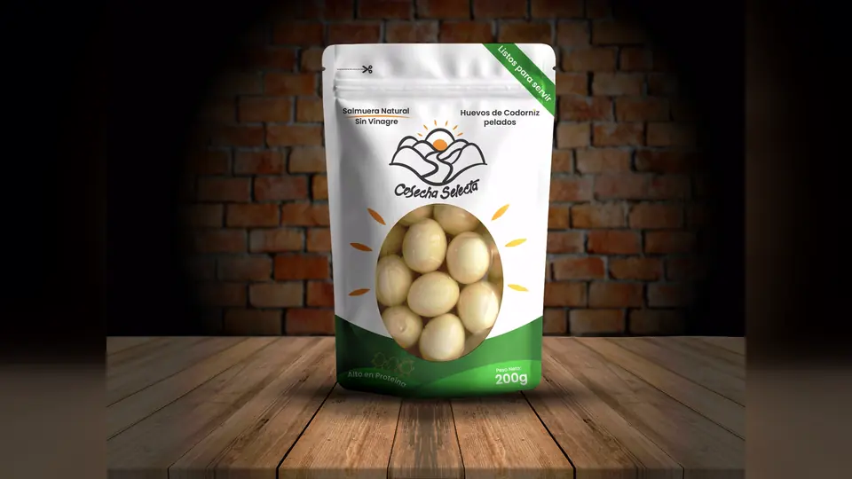

MacondoLab y Universidad Simón Bolívar
Cobertura de MacondoWeek y contenido corto para las redes de MacondoLab: edición vertical, subtitulado para que la pieza se entienda sin sonido y revisión posterior de alcance y retención.
Ingeniero multimedia en formación, Cúcuta.
Edito, animo y diseño piezas que tienen que funcionar fuera del computador: un video narrativo, un empaque que se sostiene en el estante o una marca que busque destacarse.
Cuatro pistas que corren en paralelo en casi cualquier encargo. La barra indica cuánto peso tiene cada una en lo que hago hoy.
Guion técnico, montaje narrativo, corrección de color y entrega en los formatos que pide cada canal.
Identidad visual, ilustración, carteles, pixel art y modelado isométrico con un sistema de marca detrás.
Animación de logotipos y publicidad dinámica trabajando curvas de animación, máscaras y capas de forma.
Piezas gráficas y videos cortos pensados para retención, con seguimiento de métricas en redes sociales.
Crear diferentes experiencias sonora clara, dinámica y coherente con la identidad y narrativa del proyecto, cuidando tanto los aspectos técnicos como la intención creativa del sonido.
Trabajo académico, institucional y de marca realizado entre 2024 y 2026.
Cobertura de MacondoWeek y contenido corto para las redes de MacondoLab: edición vertical, subtitulado para que la pieza se entienda sin sonido y revisión posterior de alcance y retención.

Marca ficticia de conservas de huevo de codorniz: logotipo, sistema de color, etiqueta y mockup de pouch resuelto para que el producto se lea completo desde un metro de distancia.
Manuales de identidad, logotipos y lineamientos visuales. La mascota de Creatures Studio se entregó también animada, para que pueda abrir cualquier pieza en video sin romper el manual.
Pieza de 23 segundos para el anuncio de un álbum: composición tipográfica sobre textura de papel, entradas por máscara y cortes ajustados al ritmo. Ejercicio académico de motion graphics, sin relación con el artista ni con su sello.
Pieza sonora para el tráiler cinematográfico de World of Warcraft: Wrath of the Lich King, protagonizado por Arthas Menethil, el Rey Exánime. Una pieza que introduce la ambientación de Rasganorte, la Plaga y el conflicto que define esta expansión del videojuego.
Cuéntame qué necesitas producir y te respondo con un plan y un estimado en un máximo de dos días hábiles.